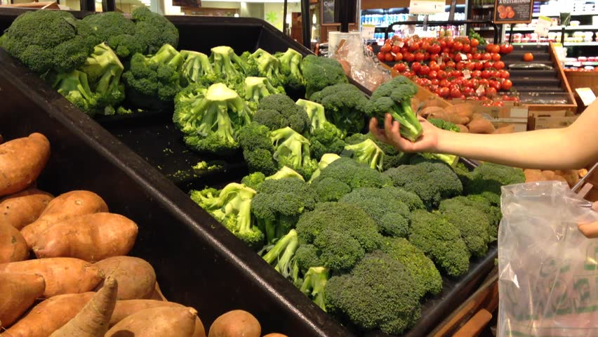
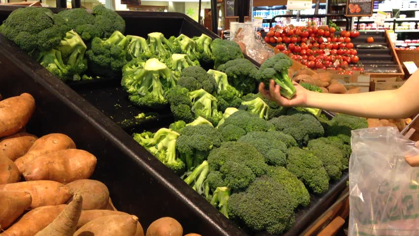

Broccoli is an edible green plant in the cabbage family whose large flowering head, stalk and small associated leaves are eaten as a vegetable.
Appearance of Broccoli
Fresh broccoli should be dark green in colour, with firm stalks. Broccoli is a fast-growing annual plant that grows 60 to 90 cm tall. Upright and branching with leathery leaves, broccoli bears dense green clusters of flower buds at the ends of the branches.
Broccoli florets are soft in texture as compared to the stems and stalks. Broccoli florets can be blanched, grated, chopped or sliced and used in recipes.
Broccoli is green, except when it's purple and it's cauliflower. Cauliflower is usually white, except when it's orange or green, and looks like broccoli, or when it's purple, and it actually is broccoli. These two vegetables are clearly different colors.
 
